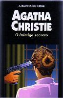

O Inimigo Secreto
The Secret Adversary
Cansados da rotina, dois jovens decidem fundar uma empresa nada convencional, especializada em investigações, a Jovens Aventureiros Ltda. O primeiro caso era um desafio que intrigava a Scotland Yard: uma jovem americana desaparecera, levando com ela documentos secretos que poderiam comprometer o governo inglês. Mas Thomas Beresford e Prudence Cowley — ou simplesmente Tommy e Tuppence — não são os únicos interessados em descobrir o paradeiro desses papéis. A mesma busca é empreendida por um homem misterioso e perigoso, conhecido como Sr. Brown, um mestre na arte do disfarce, que pode aparecer do nada e desaparecer em seguida sem deixar qualquer rastro.